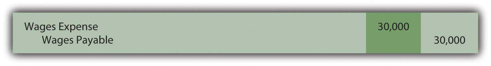
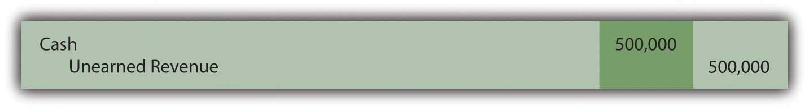
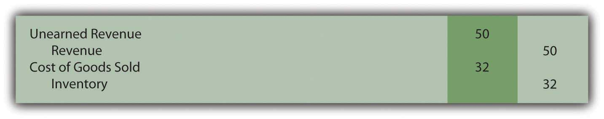

At the end of this section, students should be able to meet the following objectives:
Question: Current liabilities often include rent payable, salary payable, insurance payable, and the like. These debts are incurred in connection with day-to-day operations. The amounts are known and payment will be made within a relatively short period of time.
Liabilities that result from physical events such as the purchase of inventory or supplies are often reported as accounts payable. Other current debts (interest payable or rent payable, for example) are sometimes combined under the general title of accrued liabilitiesLiabilities that grow gradually because of the passage of time; common examples include salaries and interest. because they grow gradually over time rather than through a specific transaction. How does an organization determine the amount of current liabilities to be reported on its balance sheet?
Answer: As discussed in a previous chapter, the timing for the recognition of a purchase is guided by the FOB point specified by the seller or negotiated by the parties. If marked “FOB shipping point,” the liability is reported by the buyer when the goods leave the seller’s place of business. “FOB destination” delays recordation until the merchandise is received by the buyer. Unless goods are damaged during transit or a dispute arises over payment for transportation charges, the FOB point is only relevant around the end of a company’s fiscal year as the accountant attempts to classify transactions between one period and the next.
Many other liabilities are not created by a specific event but rather grow gradually day by day. Interest and rent are common examples but salaries, insurance, payroll taxes, and utilities also accrue in the same manner. They increase based on the passage of time. Interest on a loan or the amount due to an employee gets larger on a continual basis. For convenience, accounting systems often ignore the growth in these debts until payment is made or financial statements are prepared. Adjusting entries are required at the end of a period to recognize any accrued liabilities that have otherwise been omitted from the general ledger.
To illustrate, assume a large group of employees earns a total of $10,000 per day. They work Monday through Friday with payment made on the final day of each week. If the company’s year ends on Wednesday, an adjustment is necessary so that the expense on the income statement and the liability on the balance sheet are both presented fairly for the three days that have passed. The following adjustment is made for $30,000 ($10,000 per day for three days) so that the debt incurred for salaries in the first year is reported properly.
Figure 13.3 Year-end Adjusting Entry to Recognize Debt for Three Days’ Work
As a second example, assume a company borrows $100,000 from a bank at a 6 percent annual interest rate on December 1 with payment to be made in six months. At the end of that year, the company owes interest but only for one month, an amount that is recognized through the following adjusting entry. Accrued interest of $500 ($100,000 principal × 6 percent × 1/12 year) is reported as of December 31.
Figure 13.4 Year-end Adjusting Entry to Recognize Interest for One Month
Link to multiple-choice question for practice purposes: http://www.quia.com/quiz/2092996.html
Question: The February 28, 2009, balance sheet for Best Buy Co. Inc. shows several typical current liability accounts such as accounts payable and accrued liabilities. However, a $479 million figure also appears titled “Unredeemed Gift Card LiabilitiesAn obligation arising when a business accepts cash in exchange for a card that can be redeemed for a specified amount of assets or services..” Over the last decade or so, the importance of gift cards has escalated dramatically for many businesses. By purchasing such cards, customers obtain the right to a specified amount of goods or services. From Starbucks to iTunes, these cards are sold to serve as gifts or merely as a convenient method for handling future payments. How does a company such as Best Buy account for the thousands of gift cards that it sells each year?
Answer: A liability represents a probable future sacrifice of an asset or service. By selling a gift card, a company has accepted an obligation that will be reported on its balance sheet. Companies such as Best Buy or Barnes & Noble must be willing to hand over inventory items such as cameras or books at the time the gift card is presented. Or, perhaps, some service can be required by the cardholder such as the repair of a computer or a massage. To the seller, a gift card is a liability but one that is not normally settled with cash. Probably the most common type of gift card is a postal stamp. When bought, the stamp provides a person with the right to receive a particular service, the mailing of a letter or package.
To illustrate, assume that a company sells ten thousand gift cards with a redemption value of $50 each. Revenue cannot be recognized when sold because the earning process is not substantially complete. The asset or service has not yet been conveyed to the customer. Rather, a liability (such as “unearned revenue” or “gift card liability”) is reported to indicate that the company has an obligation to the holder of the card.
Figure 13.5 Sale of Ten Thousand $50 Gift Cards for Cash
Over time, customers will present their gift cards for selected merchandise. Assume that a person uses the first $50 card to buy goods which had originally cost the company only $32. Upon redemption, the liability is satisfied and the revenue can be recognized. The obligation is met and the earning process has been substantially completed. The second entry below presumes a perpetual inventory system is in use.
Figure 13.6 Redemption of Gift Card

Question: Some gift cards are never redeemed. They might be lost or just forgotten. Does the liability for a gift card remain on a company’s balance sheet indefinitely if it is unlikely that redemption will ever occur?
Answer: One reason that gift cards have become so popular with businesses is that some percentage will never be redeemed. They will be misplaced, stolen or the person will move away or die. In such cases, the seller has received money but was never forced to fulfill the obligation. The entire amount of the sale is profit.
A difficult theoretical question arises as to the timing of recognition of the revenue from any such anticipated defaults since the earning process is never substantially completed by redemption. In theory, a company recognizes this revenue when reasonable evidence exists that the card will never be used by the customer. Practically, though, determining this precise point is a matter of speculation.
Companies typically report the revenue from unused gift cards at one of three possible times:
Because of this accounting issue, a note to the financial statements produced by Best Buy explains: “We recognize revenue from gift cards when: (i) the gift card is redeemed by the customer, or (ii) the likelihood of the gift card being redeemed by the customer is remote (‘gift card breakage’), and we determine that we do not have a legal obligation to remit the value of unredeemed gift cards to the relevant jurisdictions.”
Link to multiple-choice question for practice purposes: http://www.quia.com/quiz/2092997.html
Accounts payable are created by the purchase of inventory or supplies. Accrued liabilities are those debts that grow gradually over time. All such liabilities must be recorded prior to the preparation of financial statements. In today’s retail world, many companies sell gift cards. Because a product or service must be provided to the holder of a gift card, the company has an obligation and a liability is reported. The liability is later reclassified as revenue when the card is redeemed because the earning process is substantially complete. Revenue should also be recorded when it becomes likely that redemption will never occur. This happens when cards are lost, stolen, or the customer has died or left the area. The company must ensure that revenue for such gift cards is not reported until an appropriate point in time.